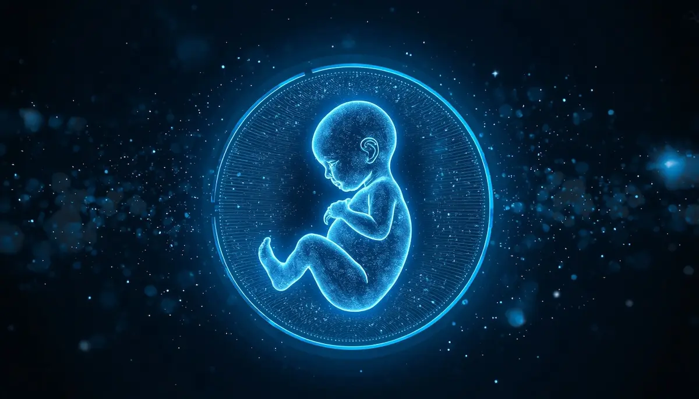

Segundo Trimestre: La Consolidación
De la semana 14 a la 27: El periodo de bienestar, los primeros movimientos y la gran revisión morfológica.
Índice del Segundo Trimestre
Navega directamente a los temas de tu interés:
- • 1. La ecografía morfológica y analíticas clave de control
- • 2. Los primeros movimientos fetales y la conexión vincular
- • 3. Cambios físicos: lumbalgia, postura, piel y circulación
- • 4. Nutrición avanzada: control de peso, hierro y energía
- • 5. Actividad física recomendada y cuidado del suelo pélvico
- • 6. Bienestar emocional: el alivio y la estabilidad del segundo trimestre
1. La ecografía morfológica y analíticas clave de control
Conocida popularmente como la ecografía de las 20 semanas (se realiza idealmente entre la semana 19 y la 22), este hito médico es una revisión exhaustiva y milimétrica de la anatomía del feto. El obstetra revisa la estructura cerebral, la columna vertebral, la morfología cardíaca, el rostro, las extremidades, la cantidad de líquido amniótico y la posición de la placenta.
A nivel analítico, este trimestre incluye la famosa prueba de tolerancia oral a la glucosa (curva de O'Sullivan), diseñada para descartar la diabetes gestacional, una alteración metabólica transitoria en la que el cuerpo procesa peor los azúcares debido a la resistencia a la insulina que generan las hormonas placentarias.

2. Los primeros movimientos fetales y la conexión vincular
Entre las semanas 16 y 22 (generalmente un poco antes si ya se han tenido embarazos previos), la madre experimenta los primeros movimientos fetales. Al principio se describen como una suave vibración, burbujas o el roce de una mariposa, para transformarse semanas después en pataditas claras y definidas.
Este es un punto de inflexión emocional profundo: el bebé deja de ser una idea abstracta en una ecografía para convertirse en un ser presente y activo con el que se interactúa a diario mediante la voz, la música y las caricias sobre el abdomen.
3. Cambios físicos: lumbalgia, postura, piel y circulación
A medida que el útero crece y sale de la pelvis, el centro de gravedad de la madre se desplaza hacia adelante, lo que genera una curvatura lumbar acentuada que suele traducirse en dolor de espalda o lumbalgia. Asimismo, el aumento del volumen sanguíneo y la presión venosa pueden provocar la aparición de retención de líquidos, pesadez en las piernas y pequeñas varices.
En la piel, es muy común la aparición de la línea alba (línea oscura vertical en el abdomen) y el melasma o cloasma gestacional (manchas oscuras en el rostro por la sensibilidad al sol), por lo que el uso diario de protector solar factor 50 es altamente recomendable.
4. Nutrición avanzada: control de peso, hierro y energía
En esta etapa, el metabolismo materno se vuelve más eficiente para canalizar los nutrientes hacia el feto. Aunque el apetito aumenta, es fundamental mantener una dieta rica en alimentos frescos y evitar los azúcares refinados y ultraprocesados que provocan picos de glucosa.
El consumo de hierro cobra especial relevancia debido a la alta demanda del volumen sanguíneo; las analíticas de control indicarán si es necesario suplementarlo para evitar la anemia gestacional, acompañada siempre de vitamina C para mejorar su absorción.
5. Actividad física recomendada y cuidado del suelo pélvico
El segundo trimestre suele ser la ventana de oro para mantenerse activa, ya que las molestias iniciales del primer trimestre han desaparecido y la barriga aún no genera una limitación excesiva. Se recomiendan deportes de bajo impacto como la natación, el yoga prenatal, el pilates adaptado y las caminatas diarias.
Es el momento clave para empezar a trabajar con conciencia el suelo pélvico y la postura corporal, preparando la musculatura que deberá sostener el peso creciente en la recta final.
6. Bienestar emocional: el alivio y la estabilidad del segundo trimestre
A nivel psicológico, este periodo se conoce como la "luna de miel" del embarazo. El riesgo de pérdida gestacional disminuye drásticamente, la energía vital regresa y la tripa comienza a ser visible, lo que invita a la madre y a su entorno a conectar plenamente con la ilusión del proyecto de vida en común.